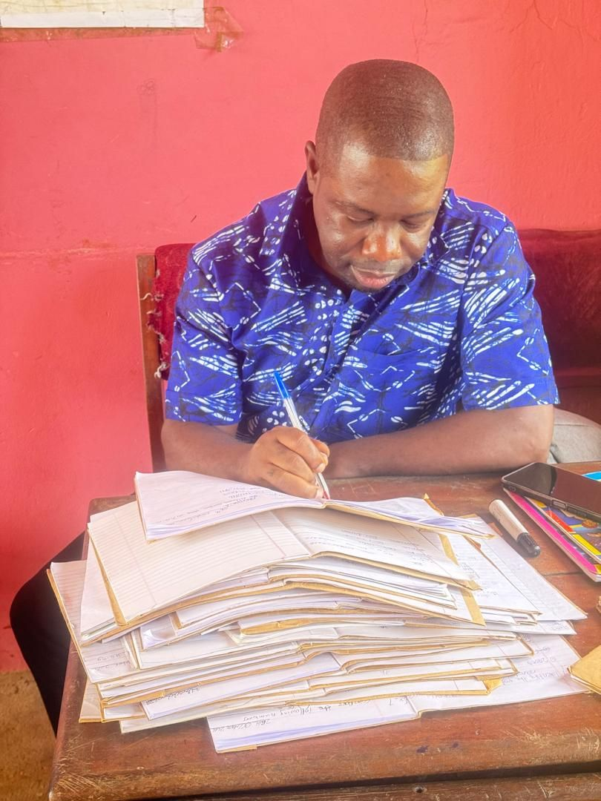
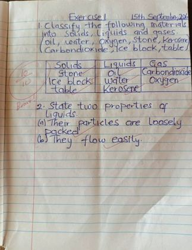
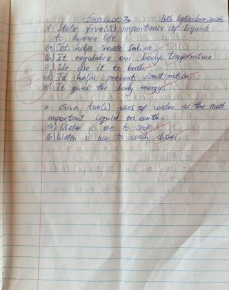
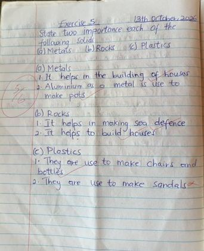
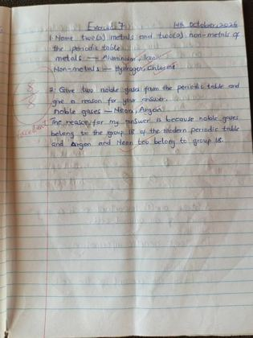
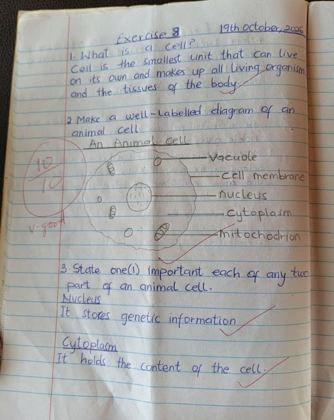

Teaching Portfolio
My scheme of learning, lesson plans, teaching materials and assessment for Basic 7 Science.
Understand It

Curriculum Knowledge
Planning with the Basic 7 Science curriculum showed me how content standards, indicators and resources fit together.
Scheme of Learning & Lesson Plans
My termly scheme of learning for Basic 7 Science. Each lesson plan shows the objectives, content, activities, TLMs, core values, assessment and follow-up work.
Scheme of Learning
Materials
Classifying materials into solids, liquids and gases; the importance of liquids and solids; the periodic table: metals, non-metals and noble gases.
Living Cells
The structure and function of plant and animal cells, and of each organelle.
Earth Science: Cycles
How the water cycle happens as a repeated pattern in nature, and why it matters.
The Human Body System
The concept of food, why humans need to eat, and the process of digestion.
Sample Lesson Plan
Indicator: Classify materials into solids, liquids and gases.
Activities: I demonstrated the properties of each state with real objects: a stone keeps its shape, water takes the shape of its container, and a balloon fills with air. Learners then sorted materials in groups and presented their answers.
Core competencies: Critical thinking and problem solving, creativity and innovation.
My Lesson Notes
Teaching & Learning Materials
Materials I made and used in my lessons.

Cell Models
Made from cardboard, a box, poster colours and glue. Learners observed the models and built their own, which helped them identify and tell apart the structures of plant and animal cells.
Periodic Table
Made from cardboard. Learners identified elements, used colours to classify metals, non-metals and noble gases, and learned their uses through games and activities.
In the Classroom
Checking learners' work and supporting them during lessons in Basic 7.
Assessment & Support for Learners
Class exercises I set and marked. Formative assessment (oral questions, observation, exercises and short quizzes) helped me spot misconceptions early, and the results shaped my next lesson.

Sample 1
Sample 2
Sample 3
Sample 4
Sample 5Supporting Learners Who Struggle
I found the exact point of confusion and helped without embarrassing the learner: simpler language, a step-by-step example, a diagram or model, an extra practice question, or a supportive peer.
Feedback Learners Can Use
I aligned questions with the lesson objectives, marked fairly and told learners what they did well and what to improve.
Core Values in My Lessons
Values I modelled and built into classroom routines, group work and discussions.
Respect
I allowed different viewpoints and responded politely.
Honesty
I encouraged learners to submit their own work and admit mistakes.
Responsibility
Learners cared for learning materials and followed classroom routines.
Collaboration
Pair and group activities required learners to share ideas and work towards a common goal.
Fairness & Inclusion
I gave different learners opportunities to participate and avoided favouritism.
Perseverance
I encouraged learners to try different approaches and learn from their errors.
Strategies in My Toolkit
Methods that make abstract science concrete.
Discuss, Apply
My Portfolio Snapshot
My scheme of learning, lesson plans, materials and exercises, gathered in one place.